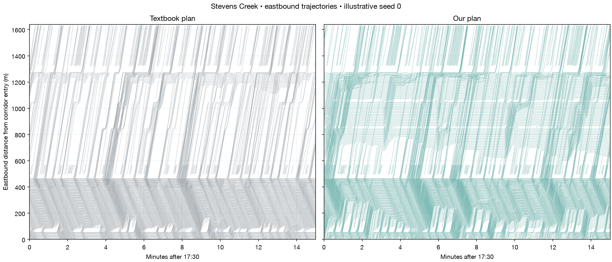

5The computer tried 300 timing plans and kept the best.
A tuning tool changes the timing, runs the entire rush hour, scores it, then tries again. Nobody picked the winner by hand. Our first try sped up eastbound but left westbound drivers worse off, so we gave the tuner stricter rules and searched again.
The best score so far across 300 tries. Lower is better: the score adds up the time every car loses. Most of the gain arrives early, then the tool fine tunes.
- How long one full cycle lasts (83 to 150 seconds)
- When each light starts its green
- How much of the cycle the main road gets
- The shortest green the main road may ever get
Three rules keep it honest. A plan cannot win by holding cars out of the corridor: every trip that never finished was charged 15 minutes of delay, so starving the entrances always scores worse. Neither direction of Stevens Creek may come out more than 5% slower than the textbook plan. And a plan that left cars stuck was thrown out on the spot, which is what happened to 181 of the 300 tries.
The result
Across 20 brand new rush hours our plan cut the time an average car loses by 22.7%, and it beat the textbook plan in 18 of the 20.
22.7%less time lost per car, counting every car
16.5%faster eastbound through the corridor
35.6%faster westbound through the corridor
15.0%less time lost by side street cars
185 → 17cars that got so stuck the simulator had to lift them out
The first number is the one we promised to judge on. If our plan were really no better, a gap this one sided would turn up in about one test out of 19,100. The side streets improved too, which was the thing we were most afraid of breaking.
Each line is one of the 20 test rush hours, with both plans run on the same randomness. Our plan loses less time in 18 of the 20.
For the curious: full numbers, tests and method
On the 20 preregistered test seeds, the optimized plan cuts rush-hour holdout all-requested delay from 836.77 to 646.74 s per requested vehicle (22.7%, one-sided paired Wilcoxon p=0.000052), improves the side-origin constraint to ratio 0.850 and cuts both directions of corridor travel, but the training teleport cap fails on 1 of 20 seeds, so no overall feasible winner is established under the preregistered rule.
The three counters in the video come from the simulator's own per-second summary for seed 33 (CSV): waiting on the road counts halting vehicles, under 0.1 m/s; shut out of the corridor counts vehicles whose scheduled departure has passed with no insertion yet; trips finished counts arrivals so far. The chart under the two maps is the difference between the plans, our plan minus the textbook plan.
Preregistered on 2026-10-28 in docs/PREREGISTRATION.md, before the optimizer or the test ran: the primary endpoint, the 5% side-origin cap, the baseline + 2 teleport rule, the untouched seeds 33 to 52, and a promise to report whichever way it went. The confirmatory comparison is the single test above; everything else here is descriptive and unadjusted.
Requested: 7,980.0 → 7,980.0
Completed: 7,165.7 → 7,732.1
Unfinished: 814.3 → 247.8 (still running or never inserted).
Lower is better. Zero-charge p=0.000845; primary p=0.000052; 1800 s p=0.000010. Score = [completed time loss + completed insertion delay + charge x (unfinished + teleport events)] / requested vehicles. The charge is a scoring convention, not measured delay; the direction holds at all three levels.
Side-origin p=0.000003 at paired-mean ratio 0.850, inside the 5% cap. Unfinished p=0.000044. Teleports p=0.117943 tested for improvement: they fall overall, 185 to 17 events over 20 seeds, but still exceed baseline + 2 on 1 of 20 seeds (seed 37: 0 to 15). That is the preregistered feasibility rule failing on the final test, so no feasible winner is declared.
EB p=0.001163; WB p=0.034790; both directions improve, EB 16.5% and WB 35.6%, and both are descriptive secondary endpoints rather than the confirmatory test. Directional travel excludes pre-insertion delay and teleported vehicles.
Completed-only loss p=0.869451 for improvement: that original outcome worsens, because the optimized plan completes trips the textbook plan never starts. Side-origin completed-only loss has p=0.550841 for improvement. These omit unfinished demand and carry survivor bias, which is why the preregistered primary counts every requested vehicle.
Bars show mean plus or minus one sample standard deviation across seeds 33 to 52, not confidence intervals and not real-world uncertainty. P-values are paired one-sided Wilcoxon tests, optimized below textbook. Full PM and holdout windows overlap and are not independent replications. Fitted-hour demand is replayed, so these seeds test randomness and later operating conditions, not unseen measured demand.
Earlier try, kept for the record: the previous plan was frozen before this search and tested on the same 20 seeds. It scored the primary endpoint lower still, 528.62 s, which is 36.8% below textbook (p=0.000013), but it left 288 stuck cars against the textbook plan's 185 and broke the baseline + 2 teleport rule on 10 of 20 seeds, and on its own earlier test cohort it had left westbound travel worse than textbook. The plan on this page is the third search, which added per-direction travel caps and a per-signal minimum mainline green.
Night is estimated demand and shows no supported gain: all-requested delay 9.02 to 9.06 s.

One path per car while it is on the eastbound corridor, across the busiest quarter hour. Rising lines mean movement, flat lines mean waiting. Same single test rush hour (seed 33) as the video, not aggregate evidence.
Data and limits in full: public counts are from 2018. De Anza Blvd and Stelling Rd have measured quarter-hour counts; Bandley Dr, Saich Way and Mary Ave profiles are estimated, with Mary Ave built from hourly observations. This is not a picture of current traffic. Mary's mapped layout omits movements totaling 775 vehicles per hour.
Teleports have not gone away: holdout totals 185 to 17 across 20 seeds; full PM totals 456 to 77. SUMO can relocate stuck cars after 300 s, which distorts congestion. Completing more trips does not prove more cars entered the road. The simulated counts matched the measured ones on 41 of 96 movement intervals, below the 82 an engineer would expect.
No field testing was done. An engineer would need current counts, the actual timing sheets and a supervised pilot before considering any real change. The timing below is a demo proposal; phase order and clearance rules are preserved and nothing is sent to city lights.
Rush-hour optimized timing · phase rows
Night optimized timing · phase rows
All results (CSV) · Paired tests (CSV) · Count sources (CSV)